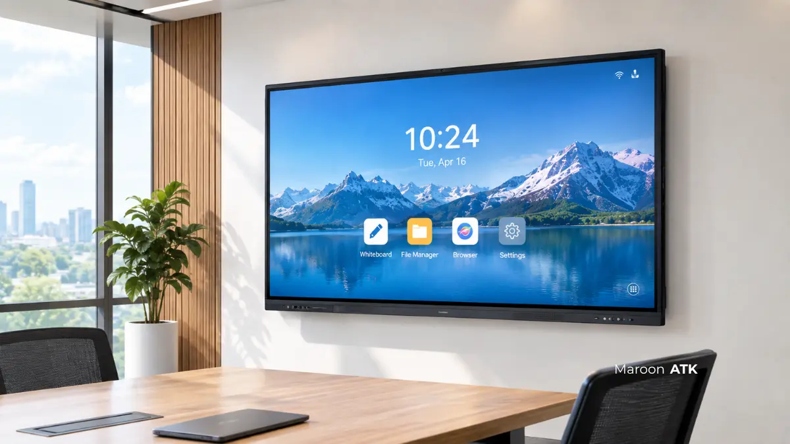

Tren digitalisasi ruang kelas dan ruang rapat terus meningkat pesat sejak beberapa tahun terakhir, seiring kebutuhan sekolah, perguruan tinggi, dan instansi pemerintah untuk menghadirkan proses pembelajaran serta koordinasi yang lebih interaktif.
Namun, kepala sekolah, wakil rektor, dan pejabat pembuat komitmen (PPK) sering menghadapi tantangan yang sama: mencari vendor penyedia yang memiliki legalitas resmi, produk berstandar industri dengan garansi jelas, serta dukungan teknis yang siap mendampingi pascapemasangan.
Panduan pengadaan interactive flat panel ini disusun untuk menjawab kebutuhan tersebut secara menyeluruh, mulai dari pemahaman dasar, spesifikasi teknis Kerangka Acuan Kerja (KAK), standar estimasi harga, hingga kelengkapan legalitas SIPLah dan E-Katalog yang aman dari risiko administratif audit.
Apa Itu Interactive Flat Panel dan Bedanya dengan Proyektor Tradisional?
Interactive flat panel (IFP) adalah layar sentuh digital yang menggabungkan fungsi monitor beresolusi tinggi, papan tulis pintar (smart board), perangkat video conference, dan komputer interaktif dalam satu unit tunggal dengan fitur kolaborasi multi-touch.
Berbeda dengan proyektor tradisional yang membutuhkan ruangan gelap dan bidang layar kain terpisah, interactive flat panel menampilkan visual secara langsung melalui panel LED resolusi 4K dengan tingkat kecerahan yang stabil. Layar tetap tampak tajam, jernih, dan kaya warna tanpa terganggu pantulan cahaya matahari maupun lampu penerangan kelas.
Dari sisi interaktivitas, proyektor biasa hanya memproyeksikan visual satu arah. Sebaliknya, IFP dilengkapi sensor sentuh inframerah presisi tinggi (20 hingga 40 titik sentuh) yang memungkinkan beberapa siswa atau peserta rapat menulis, menggambar, dan menghapus anotasi secara bersamaan di atas layar.
Fitur wireless screen sharing memudahkan guru atau narasumber menyiarkan layar laptop, tablet, hingga smartphone ke monitor utama tanpa repot menyambungkan kabel HDMI tambahan. Kombinasi ini menjadikan interactive flat panel jauh lebih relevan untuk metode pembelajaran aktif (active learning), diskusi studi kasus, maupun rapat koordinasi instansi modern.

Mengenal Papan Tulis Digital Smart Board: Fitur Unggulan dan Cara Kerjanya
Pelajari anatomi smart board modern, integrasi stylus pen presisi, dan fitur cloud whiteboard untuk efisiensi mengajar.
Spesifikasi Teknis Apa Saja yang Wajib Masuk Dokumen Pengadaan Interactive Flat Panel?
Dokumen pengadaan interactive flat panel wajib mencantumkan resolusi layar minimal 4K UHD, ukuran layar sesuai rasio ruangan, sistem operasi ganda (OPS PC), jumlah titik sentuh multi-touch, dan opsi mobilitas braket agar institusi terhindar dari salah beli spesifikasi.
Agar tidak terjadi kesalahan tafsir spesifikasi saat proses tender LPSE atau pembelian langsung via SIPLah, berikut poin parameter teknis yang perlu dicantumkan secara eksplisit dalam dokumen Request for Quotation (RFQ) maupun Kerangka Acuan Kerja (KAK):
- Kualitas Layar & Kaca Pelindung: Wajib mengusung resolusi minimal 4K Ultra HD (3840 x 2160 piksel) dengan sudut pandang lebar 178 derajat. Lapisan kaca harus berupa anti-glare tempered glass berkekuatan minimal 7H Mohs agar tahan goresan stylus dan benturan tidak disengaja.
- Ukuran Layar yang Tepat: Pilihan ukuran harus disesuaikan dengan dimensi ruangan. Ukuran 65 inch ideal untuk ruang kelas berkapasitas hingga 30 siswa, ukuran 75 inch untuk kelas 40-50 siswa, dan ukuran 86 inch untuk ruang auditorium mini atau ruang rapat senat pimpinan.
- Interaktivitas Multi-Touch: Mengharuskan respon sentuhan berkecepatan di bawah 8 milidetik dengan toleransi minimal 20 hingga 40 titik sentuh simultan. Fitur ini krusial untuk kegiatan presentasi kolaboratif dan pembelajaran kelompok.
- Arsitektur Dual OS (Android & Windows OPS): Sistem operasi ganda memastikan fleksibilitas operasional. OS Android bawaan digunakan untuk navigasi whiteboard instan, sementara slot modul Open Pluggable Specification (OPS) Windows memfasilitasi aplikasi perkantoran kompleks dan software laboratorium.
- Audio & Kamera Konferensi: Speaker stereo terintegrasi (minimal 2x15 Watt) untuk ruangan kelas tanpa perlu speaker luar tambahan, serta mikrofon array bawaan dengan kemampuan peredam kebisingan otomatis (noise reduction).
- Opsi Mobilitas Fleksibel: Untuk ruangan yang sering dialihfungsikan, cantumkan opsi standing trolley beroda dengan sistem pengunci mekanis atau varian digital whiteboard touch screen portable 55 inch yang mudah digeser antar ruangan.

Spesifikasi teknis smart board 65 inch beresolusi 4K untuk kelengkapan Kerangka Acuan Kerja (KAK) pengadaan sekolah dan instansi pemerintah.
Bagaimana Standar Harga Interactive Flat Panel dan Layanan Vendor yang Wajar?
Standar harga interactive flat panel bervariasi tergantung ukuran layar, modul komputasi OPS, volume pesanan, dan cakupan layanan purna jual; hubungi tim kami untuk penawaran resmi tertulis sesuai pagu anggaran instansi Anda.
Harga pengadaan sangat dipengaruhi oleh spesifikasi perangkat keras tambahan seperti kapasitas RAM, tipe prosesor modul Windows OPS, serta kelengkapan aksesori braket dinding atau roda dorong. Oleh karena itu, pejabat pengadaan disarankan meminta Surat Penawaran Harga resmi tertulis sebelum menetapkan Harga Perkiraan Sendiri (HPS).
Sebagai acuan komparasi umum sebelum mengajukan Rencana Anggaran Biaya (RAB), berikut tabel perbandingan varian ukuran interactive flat panel beserta peruntukan ruangannya:
| Varian Produk | Resolusi & Sentuhan | Fitur Kunci | Peruntukan Ideal |
|---|---|---|---|
| Portable Touch Whiteboard 55" | 4K UHD • 20 Touch | Stand roda fleksibel, kamera & baterai built-in | Lab multimedia kecil, ruang diskusi dinamis |
| Smart Board Interaktif 65" | 4K UHD • 20-40 Touch | Anti-glare 7H, Dual OS Android & OPS Slot | Ruang kelas standar (30 siswa), ruang rapat pimpinan |
| Interactive Flat Panel 75" | 4K UHD • 40 Touch | Speaker stereo 2x15W, Wireless Screen Share 4 screen | Ruang kuliah sedang, laboratorium terpadu |
| Executive Interactive Panel 86" | 4K UHD • 40 Touch | Modul OPS Intel Core i7, Mic Array 8 arah | Auditorium instansi, ruang rapat dewan direksi |
Selain harga unit, perhatikan pula komponen pendukung dalam kontrak pengadaan. Dua vendor dengan penawaran harga serupa dapat memberikan nilai investasi yang bertolak belakang apabila salah satunya tidak menyertakan instalasi dan proteksi garansi resmi.
MAROON ATK selalu menyertakan pengiriman bergaransi, instalasi gratis oleh teknisi bersertifikat, bracket dinding kokoh, serta jaminan purna jual resmi untuk setiap proyek pengadaan interactive flat panel, sehingga institusi Anda tidak dibebani biaya teknisi tersembunyi pascainspeksi barang.

Perbedaan Smart Board dan Proyektor Biasa: Analisis Efisiensi dan Daya Tahan
Komparasi biaya total kepemilikan (TCO) antara penggantian lampu proyektor dan panel LED interaktif hemat energi.
Kelengkapan Legalitas Vendor Apa yang Dibutuhkan untuk SIPLah dan E-Katalog?
Vendor interactive flat panel yang kredibel wajib menyediakan Surat Perintah Kerja (SPK), faktur pajak elektronik resmi, pencatatan di platform E-Katalog atau SIPLah, rincian lembar spesifikasi teknis pabrik, dan Surat Penawaran Harga (SPH).
Bagi institusi sekolah negeri di bawah naungan Kemendikbudristek maupun instansi kedinasan pemerintah, kelengkapan aspek legalitas merupakan syarat mutlak agar transaksi pengadaan barang dapat dipertanggungjawabkan secara sah dalam Laporan Keuangan Tahunan dan bebas dari temuan Badan Pemeriksa Keuangan (BPK).
Pastikan vendor pilihan Anda memenuhi instrumen administrasi berikut:
- Kesiapan Transaksi SIPLah & E-Katalog LKPP: Produk terdaftar resmi dengan ID komoditas aktif pada portal SIPLah untuk sekolah atau E-Katalog Pemerintah untuk instansi vertikal, dinas, dan perguruan tinggi negeri.
- Faktur Pajak Elektronik (e-Faktur): Vendor merupakan Pengusaha Kena Pajak (PKP) resmi yang menerbitkan e-Faktur dan e-Bupot sah sesuai tarif perpajakan PPN terbaru.
- Surat Penawaran Harga (SPH) Resmi: Berisi rincian harga satuan barang, PPN 11%, estimasi waktu perakitan, dan jangka waktu berlakunya penawaran.
- Surat Perintah Kerja (SPK) & Berita Acara: Format dokumen kontrak kerja sama resmi dilengkapi lembar Berita Acara Serah Terima (BAST) dan Berita Acara Pemeriksaan Barang (BAPB).
- Surat Jaminan Garansi Resmi: Komitmen tertulis dari prinsipal/distributor resmi atas penggantian suku cadang dan panel layar apabila terjadi kerusakan cacat produksi.
Proses pengadaan barang di Indonesia mengacu pada ketentuan Lembaga Kebijakan Pengadaan Barang/Jasa Pemerintah (LKPP). MAROON ATK memfasilitasi seluruh dokumentasi administrasi tersebut secara satu pintu, sehingga tim PPK dan bendahara sekolah tidak perlu repot berkoordinasi dengan banyak pihak perantara.
Bagaimana Implementasi Interactive Flat Panel di Institusi Pendidikan Berjalan Sukses?
Implementasi interactive flat panel di institusi pendidikan berhasil optimal ketika pemasangan fisik dikerjakan teknisi berpengalaman, didukung pelatihan pengoperasian guru, serta didampingi layanan garansi purna jual yang responsif.
Implementasi teknologi di lapangan membuktikan bahwa perangkat canggih hanya akan bermanfaat jika didukung oleh kapabilitas instalasi yang kokoh dan transfer keahlian yang tuntas kepada tenaga pengajar.
Pengalaman nyata institusi menjadi indikator penting dalam memilih mitra penyedia:
- Dr. Budi Santoso, M.Pd. (Wakil Rektor Universitas Merdeka Malang): Menyampaikan bahwa proses instalasi unit interactive flat panel ukuran 86 inch di gedung auditorium kampus berjalan presisi dan tepat waktu tanpa kendala teknis kelistrikan, serta tim teknisi memberikan pelatihan menyeluruh bagi staf operator kampus.
- Dra. Retno Wulandari, M.Si. (Dinas Pendidikan Provinsi Jawa Timur): Mengapresiasi responsivitas tim teknis MAROON ATK saat memberikan pendampingan purna jual berkala di lingkungan aula dinas, sehingga agenda pelatihan guru lintas daerah berlangsung tanpa hambatan tayang.
Studi kasus tersebut menegaskan bahwa kesuksesan modernisasi ruang kelas tidak semata-mata diukur dari tingginya spesifikasi di atas kertas, melainkan kepastian keandalan unit saat digunakan mengajar setiap hari.
Kesalahan Umum Apa yang Perlu Dihindari Saat Pengadaan Interactive Flat Panel?
Dalam praktiknya, beberapa instansi kerap terjebak pada kesalahan umum yang berujung pada kerugian finansial atau keterlambatan laporan pertanggungjawaban:
- Menyusun Spesifikasi Terlalu Umum: Hanya menulis deskripsi "layar sentuh pintar" tanpa mencantumkan resolusi 4K, kapasitas RAM modul OPS, dan versi sistem operasi, sehingga vendor tidak bertanggung jawab dapat mengirimkan unit tipe lama berkecepatan rendah.
- Tergiur Harga Miring Non-Resmi: Membeli dari toko online ritel tanpa nomor e-Katalog atau NPWP berstatus PKP, yang berisiko membatalkan pencairan dana BOS/APBD saat pemeriksaan inspektorat.
- Mengabaikan Struktur Pemasangan Dinding: Tidak mengaudit kekuatan dinding bata/partisi sebelum memasang panel berbobot di atas 50 kg, yang berpotensi membahayakan keselamatan pengguna jika tidak memakai bracket bertulang baja khusus.
- Tidak Memperhitungkan Pelatihan Guru: Unit canggih akhirnya hanya berakhir sebagai layar proyektor biasa karena staf pengajar tidak dibekali workshop penggunaan software whiteboard dan aplikasi presentasi interaktif.
Bagi institusi yang sedang merancang tata ruang belajar terpadu, Anda juga dapat mengombinasikan pengadaan perangkat interaktif ini dengan kebutuhan furniture kantor & ruang kelas modular serta paket perlengkapan alat tulis kantor secara terintegrasi satu pintu.
MAROON ATK siap membantu penyusunan draf Kerangka Acuan Kerja (KAK), perhitungan HPS, hingga simulasi demo unit untuk sekolah dan instansi di Jakarta, Surabaya, Malang, Denpasar, Makassar, serta pengiriman ke seluruh penjuru Indonesia.
Konsultasikan Kebutuhan Pengadaan Interactive Flat Panel Anda
Dapatkan bantuan draf spesifikasi teknis KAK, simulasi penawaran harga resmi SIPLah/E-Katalog, serta demo produk bersama tim spesialis MAROON ATK.
Rangkuman Poin Penting
Pengadaan interactive flat panel merupakan investasi jangka panjang untuk mewujudkan transformasi digital pendidikan dan efisiensi komunikasi rapat instansi pemerintah.
- Ketepatan Spesifikasi: Pastikan panel beresolusi 4K dengan kaca anti-glare 7H dan opsi modul komputer OPS agar mampu menjalankan aplikasi berat tanpa lag.
- Keamanan Legalitas: Pastikan vendor terdaftar resmi di SIPLah atau E-Katalog serta mampu menerbitkan faktur pajak elektronik dan SPH resmi.
- Dukungan Teknis Lengkap: Pilih vendor yang menyediakan garansi resmi, instalasi profesional, dan pelatihan operasional tanpa biaya tersembunyi.
Mulai perencanaan pengadaan teknologi interaktif sekolah dan instansi Anda bersama tim procurement MAROON ATK yang tepercaya dan berpengalaman.
Pertanyaan yang Sering Diajukan
Interactive flat panel adalah layar sentuh digital pengganti papan tulis dan proyektor yang memungkinkan tulisan, presentasi, dan kolaborasi multi-touch secara langsung di layar.
Interactive flat panel memiliki layar sentuh, tidak butuh ruangan gelap, gambar lebih tajam, dan mendukung kolaborasi langsung, sedangkan proyektor hanya memproyeksikan gambar satu arah.
Ukuran layar interactive flat panel umumnya tersedia mulai 55 inch hingga 86 inch, disesuaikan dengan luas ruang kelas atau ruang rapat.
Dokumen yang umum dibutuhkan meliputi Surat Penawaran Harga, rincian spesifikasi teknis, faktur pajak resmi, dan bukti pencatatan di E-Katalog atau SIPLah.
Bisa, tersedia varian portable dengan roda dan baterai yang memudahkan perpindahan antar ruang kelas atau ruang rapat.

Asher Angelica
Praktisi procurement teknologi pendidikan dan fasilitas korporat berfokus pada standardisasi Interactive Flat Panel, integrasi sistem E-Katalog/SIPLah, dan tata kelola pengadaan instansi pemerintah di Indonesia.